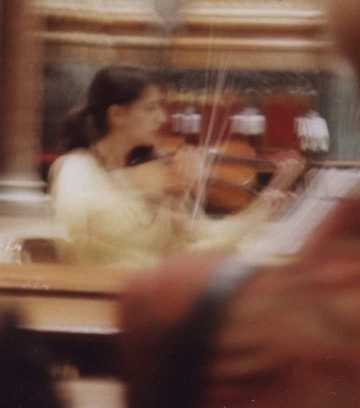

Video playlist: Hooga, Mother Queen, Talking to You, Crazy Old World, Paris at Night, LovePeaceFlesh, Hill The MountaVista.
Classic MP3 | ||
| Concert for violiste de la Merce | 6Min |
In Barcelona I made the sketch in the church. She played violin. At home I made this piece of music.  |
Rock/Blues MP3 | ||
| The Last Thing I Will Do with This Live | 10Min |
This song I have written so long ago, that I gave up the idea of ever playing it and singing along. But now somehow I'm starting to be able to play piano along with singing. I play piano for years now, usually a kind of classical sounding inprovisation. And I hoped one day to be able to perform it. |
| Rude To Night | 4Min11 | Bawling assault on you and your subwoofers.
You meet a girl and she is too pretty.
Pretty birds fly too fast.
|
| Doctor Fish | 2Min13 | Up tempo, heavy kissing. |
| Doctor Fish (long) | 5Min41 | |
| MoonLight | 5Min45 |
It's a horrible sad story.
Passing under the flowering cherry trees in the orchard.
Remembering his fallen love, |
| MotherQueen | 7Min11 | Love story telling.
It's about a MotherQueen, who protects her daughter so well, that I really don't stand a chance. She tries to blow me off with some well standing principles. |
| Big Bright Brains | 2Min59 | Beating business at Wallstreet.
She walks with agitated speed. |
| Big Bright Brains (long) | 4Min56 | |
| Dreaming | 3Min32 | A far trip blowing.
If you came down from the sky: Break wild now! |
| Another Parachute | 9Min | This is also an old song.
It's at the moment when you get a present of your mother for your master degree. And your are falling out of an plane. Yes, you got an one-week-course for para-jumping. |
| Waiting For So Long | 4Min01 | |
| Tear Her Away | 2Min14 | |
| Hooga Hooga Hooga Hook Hook Hook | 4Min01 | Tribal rhytm.
About nothing but the only thing. |
| She Gonna Gonna Get It | 7Min59 | |
| Flower Picking | 7Min17 | Mysterious story telling. Many songs start getting created by playing chords on my gitar.
So this one too. |